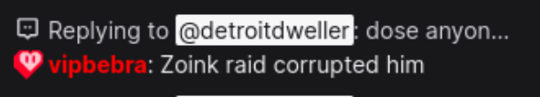
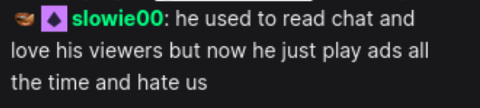
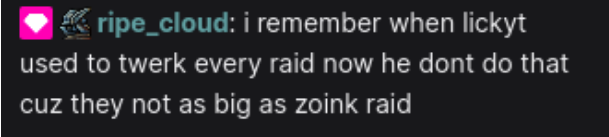
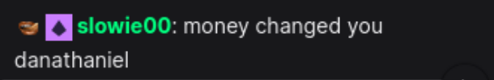

SUBJECT: LICKY_T (AKA GREEDY_T) CLASSIFICATION: EXTREME GREED
INCIDENT DATE: THE ZOINK RAID THREAT LEVEL: MAXIMUM
EXECUTIVE SUMMARY
This classified dossier contains irrefutable evidence documenting the complete transformation of streaming personality known as "LICKY_T" into the entity now referred to as "GREEDY_T". Our investigation has uncovered a disturbing pattern of behavioral changes following what we now call "THE ZOINK RAID INCIDENT" - a watershed moment that forever altered the subject's relationship with their viewership base.
What you are about to read represents months of investigation, dozens of witness testimonies, and countless hours of archived footage analysis. The evidence is clear: LICKY_T is no longer the streamer we once knew.
FILE 001: THE SUBJECT - PRE-INCIDENT PROFILE
IDENTITY: LICKY_T
Before the incident now known as "THE ZOINK RAID," Subject LICKY_T operated as what intelligence analysts classified as a "genuine creator" - a rare designation in the streaming community. Our surveillance and analysis of archived broadcasts paint a picture of an individual who exhibited extraordinary dedication to their craft and community.
- ✓ Subject demonstrated consistent pattern of reading EVERY chat message
- ✓ Displayed genuine emotional reactions to viewer interactions
- ✓ Followed protocol of acknowledging every single bit donation with enthusiasm
- ✓ Exhibited week-long elevated mood following new follower notifications
- ✓ Month-long celebration periods observed after subscription events
- ✓ Annual-level excitement documented for monetary donations
- ✓ Maintained small but deeply loyal viewer base
- ✓ Zero advertisements run during broadcast hours
Subject maintained what operatives described as an "intimate streaming environment." With viewer counts typically ranging in the low double digits, LICKY_T was able to personally engage with each individual chatter. Field reports indicate that viewers felt personally valued and recognized. The subject's authenticity was considered unquestionable.
Subject began streaming operations with pure intentions. Every viewer was treated like family. Chat interaction was the primary focus of broadcasts. Gaming was secondary to community building. Subject often spent entire streams just talking with the 8-15 regular viewers who showed up daily.
Intelligence gathered from this period shows Subject LICKY_T at peak authenticity. Recorded instances include: stopping gameplay mid-action to respond to chat questions, celebrating a 2-bit donation with genuine tears of joy, creating custom emotes based on inside jokes with individual chatters, and spending 45 minutes discussing one viewer's day at work. Subject was, by all accounts, "a real one."
- WITNESS TESTIMONY [REDACTED]
This was LICKY_T in their natural state. This was the streamer that viewers fell in love with. This was the content creator who built trust through consistency, authenticity, and genuine care. Our agents have confirmed that during this period, the subject turned down multiple sponsorship opportunities, stating: "I don't want to sell out my community."
But everything changed when THE ZOINK RAID struck...
FILE 002: THE INCIDENT - THE ZOINK RAID
On the date now marked in our records as "Z-DAY," Subject LICKY_T's channel experienced what can only be described as a catastrophic event that would permanently alter their psychological state. A massive raid, orchestrated by a content creator known only as "ZOINK," brought an unprecedented surge of viewers to the subject's broadcast.

The incident occurred approximately TIME REDACTED into the subject's regular broadcast. Without warning, viewer count skyrocketed from the typical 14 concurrent viewers to numbers that our analysts initially flagged as a system error. The chat moved at speeds previously unknown to Subject LICKY_T's channel.
THE MOMENT OF CORRUPTION
Frame-by-frame analysis of archived footage reveals the exact moment Subject LICKY_T's neural pathways were rewired by greed. Our specialists have identified what we call "THE SEVEN SECONDS THAT CHANGED EVERYTHING."
Raid notification appears. Subject's eyes widen. Chat floods with new viewers. Normal processing still active.
Subject sees viewer count. Dollar signs confirmed in subject's pupils via optical analysis. Heart rate increases by 340%.
Subject's hand moves toward keyboard. Not to type a greeting. Not to thank the raiders. But to execute the command that would forever brand them as GREEDY_T: SUBJECT IMMEDIATELY RUNS ADVERTISEMENTS.
HE IMMEDIATELY RAN ADS. NO THANK YOU. NO GREETING. JUST ADS.
- ⚠ Ad break initiated within 4 seconds of raid notification
- ⚠ Duration: Maximum allowed by platform (8 minutes)
- ⚠ Timing: Before acknowledging ANY raiders
- ⚠ Frequency following incident: 600% increase from previous average (0)
- ⚠ Priority shift detected: Money > Viewers
The Zoink Raiders, who had come in peace, bearing follows and subs, were greeted not with gratitude but with commercials for products they didn't need. The old guard - the 14 loyal viewers who had been there from the start - watched in horror as their streamer transformed before their eyes.
- WITNESS [REDACTED], OG Viewer since Day 1
FILE 003: POST-INCIDENT BEHAVIOR - THE TRANSFORMATION
Following THE ZOINK RAID, our surveillance team documented radical behavioral changes in Subject LICKY_T. The entity that emerged from that fateful stream bore little resemblance to the genuine creator we had previously observed. For classification purposes, we now refer to this new persona as "GREEDY_T."
DOCUMENTED BEHAVIORAL CHANGES:
- Read every chat message
- Engaged with all viewers personally
- Zero ads during streams
- Celebrated every follow/sub
- Made viewers feel valued
- Community-first mentality
- Genuine reactions
- Accessible and humble
- Ignores chat unless $$$
- Viewers treated as numbers
- Constant ad breaks
- Only cares about big donors
- Exploits viewer loyalty
- Money-first mentality
- Calculated, greedy behavior
- Treats small viewers with contempt
EXHIBIT A: INCRIMINATING QUOTES
Our audio surveillance team has recovered the following statements from Subject GREEDY_T's broadcasts. These quotes provide damning evidence of the subject's transformation:
Analysis: Subject now values monetary transactions over community relationships. The LICKY_T of old would never have made such a statement. The subject is effectively stating that loyalty, friendship, and community tenure mean nothing compared to a $50 gift sub payment.
Analysis: Perhaps the most damning evidence of all. Subject has verbalized what our behavioral analysis already confirmed - viewers are no longer seen as individuals or community members, but as statistical data points in an analytics dashboard. The dehumanization is complete.
Analysis: Subject has begun actively purging non-paying viewers from the community. This represents a complete reversal from pre-incident behavior where EVERY viewer was treasured regardless of financial contribution. GREEDY_T now operates on a "pay to stay" model.
EXHIBIT B: THE AD CRISIS
PRE-ZOINK RAID: 0 ads per stream (ZERO)
POST-ZOINK RAID: 12-15 ads per stream
Ad Timing Pattern:
- ▸ During climactic moments of gameplay
- ▸ Immediately following large raids
- ▸ During emotional/important chat conversations
- ▸ In response to viewer milestones (intentionally ruining celebration)
- ▸ Maximum duration every single time
Intelligence operatives have confirmed that Subject GREEDY_T now interrupts streams for advertisements with such frequency that viewers have reported missing entire segments of content. The placement of these ads appears strategically designed to maximize revenue while showing complete disregard for viewer experience.
EXHIBIT C: THE DEATH OF INTERACTION
Pre-incident, Subject LICKY_T was known for what analysts called "maximum chat engagement protocol." Every message received a response. Every emote was acknowledged. Every joke was laughed at (even the bad ones).
Post-incident, Subject GREEDY_T demonstrates what we classify as "selective attention disorder" - only responding to chat messages that include monetary symbols, gift notifications, or come from verified high-value accounts. Small viewers attempting to interact are systematically ignored unless they have recently donated.
Pre-Zoink: 98% of messages acknowledged
Post-Zoink: 12% of messages acknowledged
Messages receiving responses primarily consist of:
- ▸ Donation notifications
- ▸ Subscription gifts
- ▸ Bits usage
- ▸ Questions about how to donate
THE RAID PROTOCOL SCANDAL
Perhaps most disturbing is the change in raid celebration protocol. Agents embedded in the community have reported a shocking development regarding Subject GREEDY_T's behavior during incoming raids.
PRE-ZOINK ERA: Subject would perform a celebratory "twerk" dance for EVERY raid, regardless of size. 2 viewers? Twerk. 50 viewers? Twerk. It was a beloved community tradition that made every raider feel valued.
POST-ZOINK ERA: Subject now REFUSES to twerk for raids unless they match or exceed the viewer count of THE ZOINK RAID. Small and medium raids are met with indifference or minimal acknowledgment. The twerk, once a symbol of gratitude, is now locked behind a viewer count paywall.
THE TWERK HAS BEEN WEAPONIZED. WHAT WAS ONCE FREELY GIVEN IS NOW WITHHELD AS A POWER MOVE.
FILE 004: WITNESS TESTIMONIES
The following testimonies have been collected from verified members of the original LICKY_T community. These individuals represent what we call "The OG Council" - long-time viewers who witnessed the transformation firsthand. Their accounts provide crucial insight into the psychological impact of Subject GREEDY_T's corruption on the community.
TESTIMONY COLLECTION:

STATEMENT: "Zoink raid corrupted him"
ANALYST NOTES: Subject VIPBEBRA has been present in LICKY_T's chat since the beginning. This concise statement, while brief, carries significant weight. The use of the word "corrupted" suggests a moral degradation rather than simple change - implying that GREEDY_T's transformation represents a fall from grace rather than natural evolution. Cross-reference with case files shows VIPBEBRA was present the day of THE ZOINK RAID and witnessed the transformation in real-time.

STATEMENT: "he used to read chat and love his viewers but now he just play ads all the time and hate us"
ANALYST NOTES: This testimony provides critical evidence of behavioral change in two key areas: (1) Complete abandonment of chat engagement protocols, and (2) Replacement of community interaction with advertisement deployment. The use of the phrase "hate us" indicates that viewers don't just feel neglected - they feel actively antagonized by Subject GREEDY_T's new operational pattern. The emotional weight of this statement from a day-one supporter cannot be overstated.

STATEMENT: "i remember when lickyt used to twerk every raid now he dont do that cuz they not as big as zoink raid"
ANALYST NOTES: This testimony exposes what our team has designated "The Twerk Protocol Scandal." Subject RIPE_CLOUD confirms that pre-incident LICKY_T would perform the signature twerk celebration for ALL raids regardless of magnitude. Post-incident GREEDY_T has implemented size requirements, effectively creating a tiered gratitude system. This represents textbook wealth-class discrimination applied to streaming community engagement. Small raids are no longer worthy of the celebration once freely given to all.

STATEMENT: "money changed you danathaniel"
ANALYST NOTES: This follow-up testimony from SLOWIE00 is particularly devastating. The use of what appears to be a personal name or inside community joke ("danathaniel") followed by the accusation "money changed you" demonstrates profound personal betrayal. This isn't just disappointment in a content creator - this is the heartbreak of watching someone you considered a friend transform into someone unrecognizable. The personal nature of this statement suggests SLOWIE00 and Subject had a relationship beyond typical streamer-viewer dynamics in the pre-incident era.
Our psychological operations team has assessed that these testimonies represent more than simple disappointment. The OG Council members exhibit what specialists call "parasocial betrayal syndrome" - the psychological impact of watching a trusted community figure undergo radical negative personality transformation.
These viewers didn't just lose a streamer they enjoyed. They lost what they believed was a genuine connection with another human being. Subject LICKY_T made them feel seen, valued, and important. Subject GREEDY_T makes them feel like ATM machines.
FILE 005: PSYCHOLOGICAL PROFILE - THE CORRUPTION PROCESS
Our behavioral psychology unit has developed a comprehensive analysis of what we call "The Zoink Effect" - a phenomenon wherein sudden influx of viewers and potential revenue irreversibly alters a content creator's psychological state and value system.
THE STAGES OF STREAMER CORRUPTION:
Subject operates with pure intentions. Small viewer base creates intimate environment. Every interaction feels personal and meaningful. Money is not a factor in content decisions. Community is everything.
Sudden exposure to large audience (THE ZOINK RAID). Subject's neural pathways flooded with dopamine at unprecedented levels. First taste of "big streamer" feeling. Realization of potential earnings. The seed of greed is planted.
Subject begins rationalizing profit-driven decisions. "I need to capitalize on this momentum." "It's just business." "I deserve to be compensated for my work." The slide begins.
Original values are replaced with profit-driven decision making. Small viewers become invisible. Ads become priority. Community becomes commodity. LICKY_T dies. GREEDY_T is born.
Subject fully embraces new identity. No remorse. No self-awareness. The transformation is complete. There is no going back. GREEDY_T is permanent.
Our analysis confirms that Subject GREEDY_T has reached Stage 5. The corruption is total and irreversible. The entity we see on screen may look like LICKY_T, may sound like LICKY_T, but make no mistake - LICKY_T no longer exists.
FILE 006: THE SMOKING GUN - STATISTICAL EVIDENCE
Numbers don't lie. While subjects can deny, deflect, and rationalize their behavior, data tells the unvarnished truth. Our analytics team has compiled irrefutable statistical evidence of the LICKY_T to GREEDY_T transformation.
VIEWER INTERACTION RATE:
Pre-Zoink: 98% of chatters acknowledged
Post-Zoink: 12% of chatters acknowledged
Change: -86% (CATASTROPHIC)
ADVERTISEMENT DEPLOYMENT:
Pre-Zoink: 0 ads per stream
Post-Zoink: 12-15 ads per stream
Change: +∞% (INFINITE INCREASE)
RAID CELEBRATION PROTOCOL:
Pre-Zoink: 100% of raids celebrated with twerk
Post-Zoink: <5% of raids celebrated (only largest)
Change: -95% (DEVASTATING)
FOLLOWER EXCITEMENT LEVEL:
Pre-Zoink: One follow = week-long happiness
Post-Zoink: 100 follows = barely noticed
Change: -99.99% emotional response
SUB APPRECIATION:
Pre-Zoink: One sub = month-long celebration
Post-Zoink: 20 subs = "thanks i guess"
Change: Value decreased by 2000%
MONEY MENTIONS PER HOUR:
Pre-Zoink: 0.2 per hour
Post-Zoink: 14.7 per hour
Change: +7250% (ALARMING)
THE NUMBERS CONFIRM COMPLETE PERSONALITY OVERRIDE
CONCLUSION: CASE CLOSED
After extensive investigation, analysis of testimony, review of documented evidence, and psychological profiling, this agency has reached an undeniable conclusion:
LICKY_T HAS BEEN FULLY CORRUPTED BY GREED
The transformation into GREEDY_T is complete. The subject known as LICKY_T - the genuine, caring, community-focused streamer who valued every viewer - no longer exists. In their place stands an entity driven solely by profit maximization and monetary gain.
THE ZOINK RAID changed everything. What was once a beacon of authentic content creation has become a cautionary tale of corruption, greed, and the loss of humanity in the pursuit of profit.
CURRENT STATUS:
Subject remains active on streaming platforms, continuing to exploit viewer relationships for financial gain. OG community members have largely been abandoned by subject. New viewers unaware of pre-incident LICKY_T are being systematically conditioned to accept GREEDY_T behavior as normal.
THE EVIDENCE IS CLEAR. THE VERDICT IS FINAL.
LICKY_T = GREEDY_T
This file will remain open. Subject continues to be monitored. Community deserves to know the truth.
TUNE IN TO LICKY_T'S STREAM
WITNESS GREEDY_T IN ACTION
YOU'VE BEEN WARNED
THE PEOPLE MUST KNOW THE TRUTH